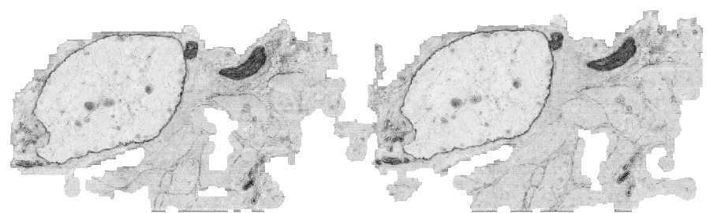
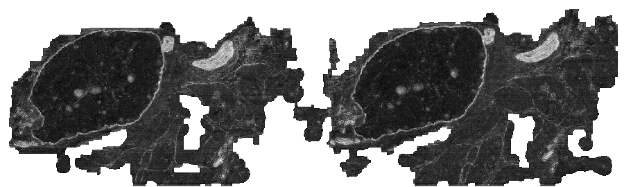
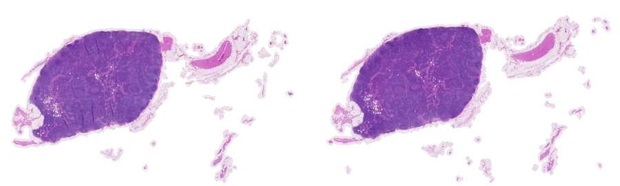
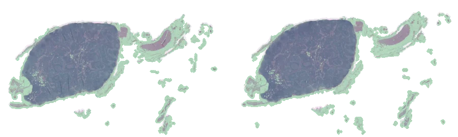
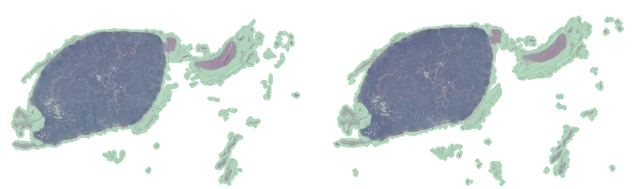

The seven overview panels show tissue only, using one H&E-derived display mask on their matched frames. The interactive GeoJSON view uses the reviewed H&E support, including at source-detail zoom. The saved predictions and score denominators are unchanged.
All five workflows completed this slide. The official reference contains 10,121,322 known code-1/code-2 pixels; 0 are metastasis and 1,470,124 (14.5%) lie outside the reviewed display support. All scores use the same known-pixel denominator, including those outside support. Native output is primary; shared-support output is a separate sensitivity analysis.
Bora was fitted only on tumor_093. The class-aware U-Net and DeepLabV3+ checkpoints used tumor_093 only after Benchmark 1 pretraining. MedSAM received boxes from this one-slide U-Net; VISTA-PATH uses a released generic “tumor” prompt. These are configured workflow comparisons with different prompt dependencies and pretraining, not a controlled architecture ranking.
Predicted metastasis and non-metastatic tissue signals
An exploratory signal requires an eight-connected focus of at least 625 pixels (0.01 mm²) inside the common reviewed H&E tissue area. This rule was fixed for the current pipeline; the reference was publicly visible before this slide was scored. It is not a diagnosis.
| Method | Tumor-like focus | Explicit non-metastatic focus | Largest tumor-like focus, mm² | Total tumor-like area, mm² |
|---|---|---|---|---|
| Bora · tumor_093-only fit | Present | Present | 1.0781 | 3.8925 |
| Class-aware U-Net · tumor_093-only fit | Present | Present | 0.0154 | 0.1635 |
| DeepLabV3+ · tumor_093-only fit | Present | Present | 0.0155 | 0.3078 |
| MedSAM with U-Net boxes | Present | Not available | 0.0367 | 0.2020 |
| VISTA-PATH generic tumor prompt | Present | Not available | 2.2462 | 8.4469 |
Bora’s binary threshold (score margin 0.1996) was chosen using tumor_093 training labels only: the highest threshold retaining at least 95% sensitivity on sampled metastatic tokens (achieved 95.02%; sampled benign specificity 98.93%). This is training-set calibration and does not guarantee sensitivity on other slides. The 4 µm prediction received 6 µm class-contour smoothing and repeated 2,000 µm² small-region cleanup. Scores below use the exact finished raster; the GeoJSON review contour has separately guarded geometric smoothing.
Binary agreement on official known pixels
The official reference contains no metastasis. IoU, Dice, metastatic sensitivity and balanced accuracy are undefined here. False-positive rates use all official code-1 known pixels; tissue area counts false-positive pixels within reviewed H&E support.
| Method | Known-pixel false-positive rate, native | Known-pixel false-positive rate, shared support | False-positive tissue, mm², native | False-positive tissue, mm², shared | Unmatched predicted foci, native |
|---|---|---|---|---|---|
| Bora · tumor_093-only fit | 2.46% | 2.33% | 3.967 | 3.777 | 1090 |
| Class-aware U-Net · tumor_093-only fit | 0.10% | 0.10% | 0.157 | 0.157 | 714 |
| DeepLabV3+ · tumor_093-only fit | 0.17% | 0.17% | 0.275 | 0.275 | 2073 |
| MedSAM with U-Net boxes | 0.12% | 0.12% | 0.197 | 0.197 | 265 |
| VISTA-PATH generic tumor prompt | 5.22% | 5.22% | 8.447 | 8.447 | 1039 |
Completion: five of five methods. See exact denominators, confusion counts, boundary and lesion metrics. The selected public-release slide does not estimate population performance; patient and center overlap with fitting remains unverified.
Contour fidelity: the exact scored Bora mask is on a 4 µm grid with a 6 µm class-contour pass and 2,000 µm² minimum connected geometry. The downloadable inspection GeoJSON applies a guarded 3 µm global vector fit; every class polygon remains at least 2,000 µm². Scores are calculated from the exact raster, so the fitted contour can differ slightly at high zoom. The reviewed H&E tissue boundary remains fixed.
Inspect the smoothed Bora GeoJSON
Interactive inspection is loading. Download the saved Bora GeoJSON.
Color key for matched panels: red is a tumor-like positive signal and green is the binary negative area inside the reviewed H&E tissue support. Bora, U-Net and DeepLabV3+ explicitly output a non-metastatic class. MedSAM and VISTA-PATH do not: their green is derived by exclusion of their positive signal for display and binary scoring, not a separate benign tissue prediction.
Bora black-and-white class responses
White indicates a stronger relative response from the tumor_093-only Bora head; black indicates a weaker response. The two displays are a softmax of the smoothed class scores, not calibrated probabilities, the thresholded BW masks, or independent Virchow2 measurements at each pixel. Transparent areas are outside reviewed H&E tissue. The training-selected threshold, 6 µm contour smoothing and 2,000 µm² cleanup apply to the separate final mask; these displays do not alter scores.


Tissue-region overview · analysis restricted to reviewed tissue



